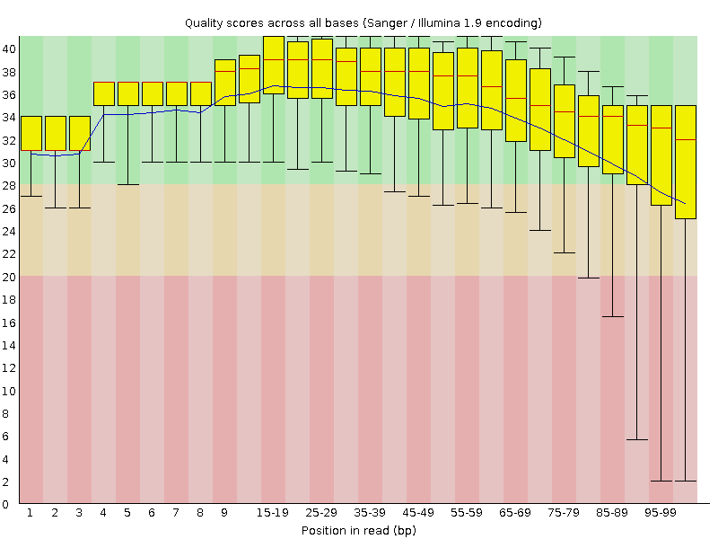
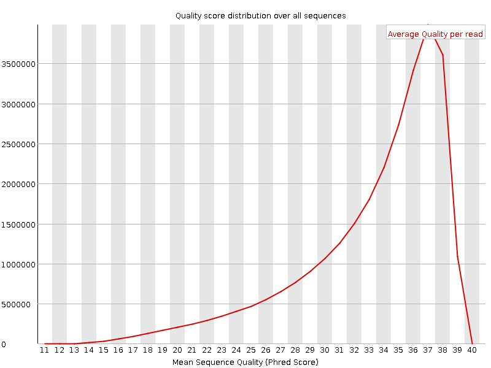
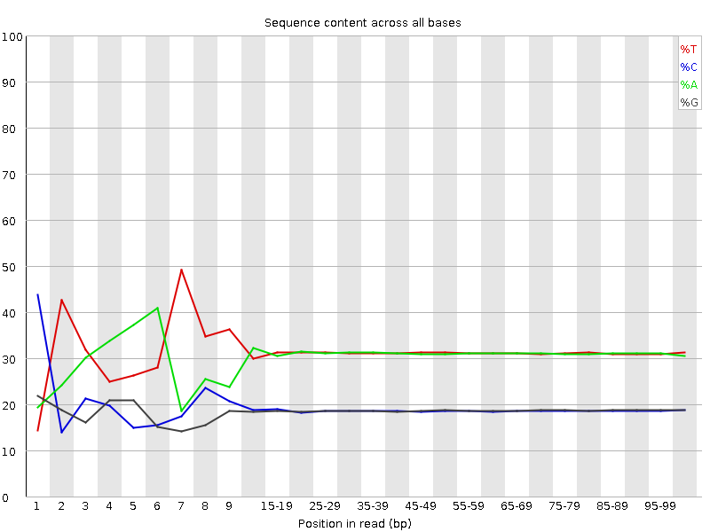
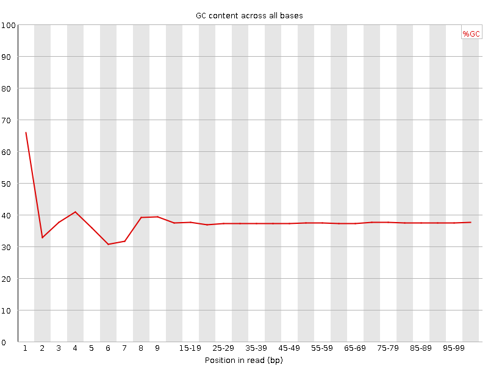
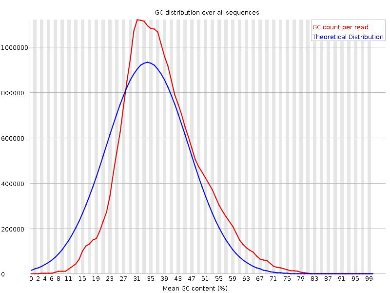
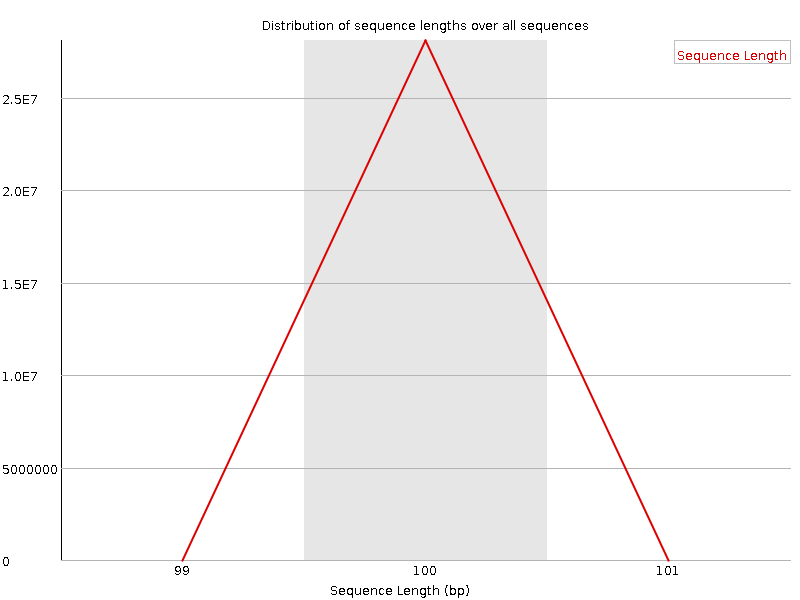
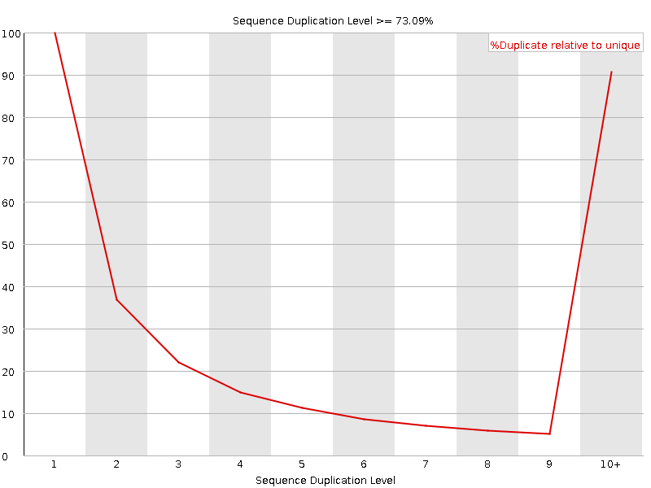
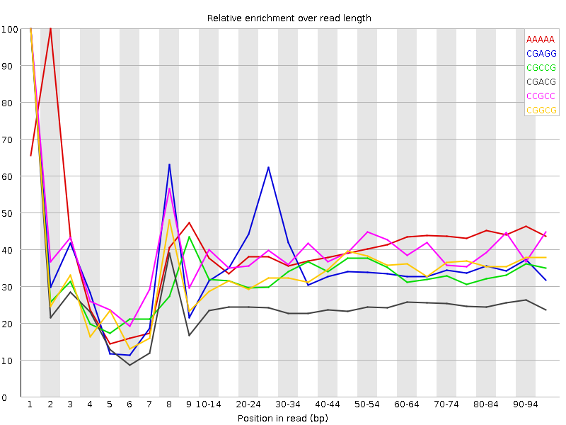

![[OK]](Icons/tick.png) Basic Statistics
Basic Statistics
| Measure | Value |
|---|---|
| Filename | c2_2.fq |
| File type | Conventional base calls |
| Encoding | Sanger / Illumina 1.9 |
| Total Sequences | 28092866 |
| Filtered Sequences | 0 |
| Sequence length | 100 |
| %GC | 37 |
Per base sequence quality

Per sequence quality scores

![[FAIL]](Icons/error.png) Per base sequence content
Per base sequence content

Per base GC content

![[WARN]](Icons/warning.png) Per sequence GC content
Per sequence GC content

Per base N content

Sequence Length Distribution

Sequence Duplication Levels

Overrepresented sequences
| Sequence | Count | Percentage | Possible Source |
|---|---|---|---|
| CTAATTTTCATCTTAATTCAACATCGAGGTCGCAAACATCTTTATCTATA | 67186 | 0.23915680229991487 | No Hit |
| CTTTCGTACAATTAATTAATATTTTATTATAGATAGAAACCAATCTGACT | 48022 | 0.1709401952794706 | No Hit |
Kmer Content

| Sequence | Count | Obs/Exp Overall | Obs/Exp Max | Max Obs/Exp Position |
|---|---|---|---|---|
| AAAAA | 17520760 | 2.2668934 | 5.5760317 | 2 |
| CGAGG | 2323900 | 2.234176 | 6.1287904 | 1 |
| CGCCG | 1395215 | 2.1630025 | 6.454509 | 1 |
| CGACG | 2157780 | 2.0467083 | 8.206269 | 1 |
| CCGCC | 1335830 | 2.043224 | 5.188411 | 1 |
| CGGCG | 1270260 | 1.9959958 | 5.795021 | 1 |
| CGCGG | 1192525 | 1.8738486 | 6.4646983 | 1 |
| TCGAG | 3111345 | 1.7886552 | 5.0684037 | 7 |
| CTCGA | 3021355 | 1.7136776 | 8.816343 | 1 |
| CGCGA | 1772410 | 1.6811752 | 6.40707 | 1 |
| CGATC | 2820395 | 1.5996954 | 5.3356614 | 4 |
| CTGGA | 2771055 | 1.5930287 | 6.796909 | 1 |
| ATCGA | 4585395 | 1.5912449 | 5.3933854 | 6 |
| CTTCC | 2825805 | 1.5664452 | 5.1014447 | 1 |
| CGCCA | 1670420 | 1.5632317 | 5.943269 | 1 |
| CGCGC | 1007060 | 1.5612457 | 5.3066745 | 1 |
| CGAGA | 2669250 | 1.5490698 | 5.347188 | 1 |
| CTCCA | 2715565 | 1.5196251 | 6.8709073 | 1 |
| CCGGC | 976050 | 1.5131708 | 5.67033 | 1 |
| CAAAA | 7009440 | 1.4822742 | 5.1597657 | 1 |
| GTCGA | 2577550 | 1.4817863 | 5.083531 | 1 |
| CTTTT | 7189050 | 1.4638747 | 5.8554926 | 1 |
| CTTTC | 4355800 | 1.4634256 | 6.5860796 | 1 |
| CTCGC | 1564395 | 1.4502432 | 6.7272205 | 1 |
| CTTCG | 2568985 | 1.4433966 | 6.3296742 | 1 |
| CGAAG | 2482585 | 1.4407408 | 5.2281437 | 1 |
| CTCGT | 2511435 | 1.411062 | 7.1836295 | 1 |
| TCATC | 4154110 | 1.4089121 | 5.01268 | 8 |
| CTCGG | 1491165 | 1.401107 | 8.389868 | 1 |
| CTGGC | 1479380 | 1.3900337 | 5.140948 | 1 |
| CTTCA | 3933445 | 1.3340712 | 5.2263904 | 1 |
| CGAAA | 3569235 | 1.2503701 | 5.4331603 | 1 |
| CTTGG | 2143860 | 1.2208763 | 5.915008 | 1 |
| CTTTG | 3493895 | 1.1897717 | 5.8519764 | 1 |
| GAATC | 3414120 | 1.1847836 | 5.0196404 | 4 |